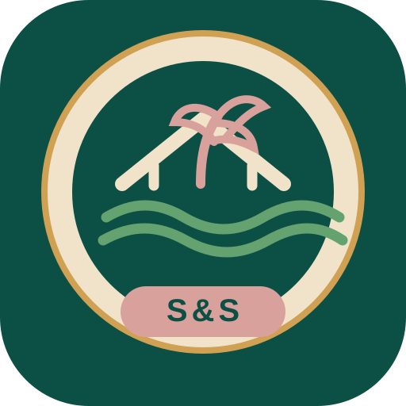
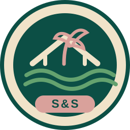
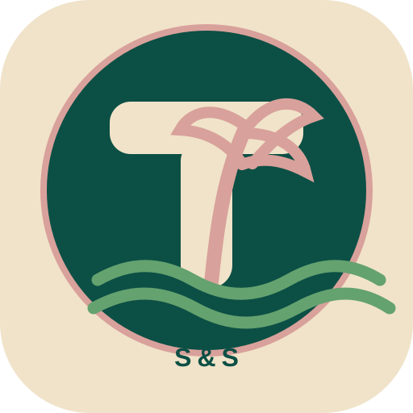
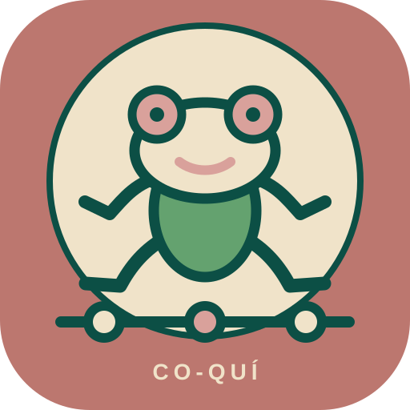

01 · Active
Beach House Roundel
The main site mark, with the beach house, palm, waves, and S&S badge. Most consistent with the invitation site.

Sarah & Sam Install pageHome-screen studies
The Beach House Roundel is active for now. These alternatives explore different balances of Cambridge transit language and Puerto Rico character.

01 · Active
The main site mark, with the beach house, palm, waves, and S&S badge. Most consistent with the invitation site.

02 · Cambridge + San Juan
The familiar transit T becomes a tropical wayfinding sign, with a pink palm growing through it and green waves below.

03 · Local character
A smiling coquí sits above a three-stop celebration line. It is the most playful and Puerto Rico-forward option.